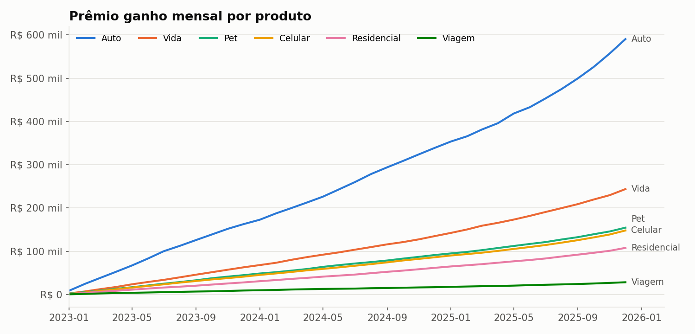
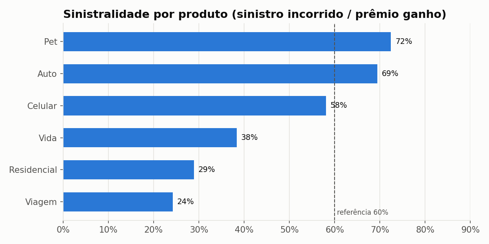
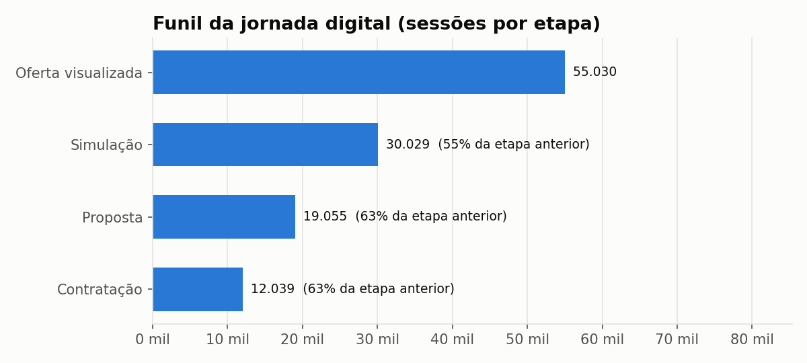
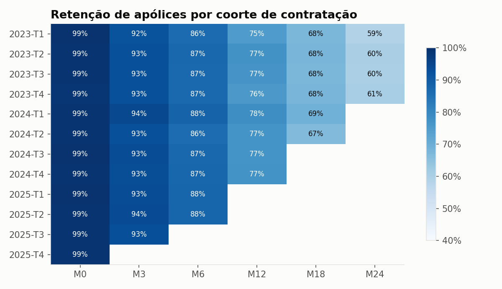
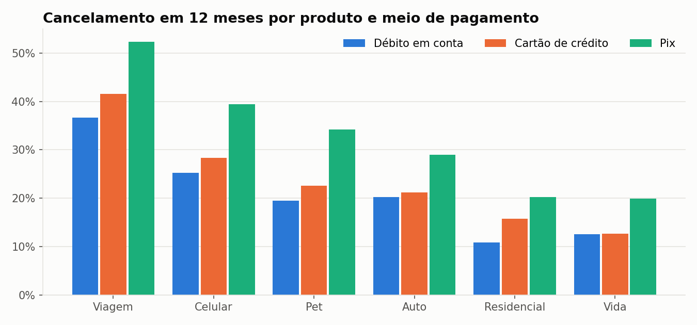
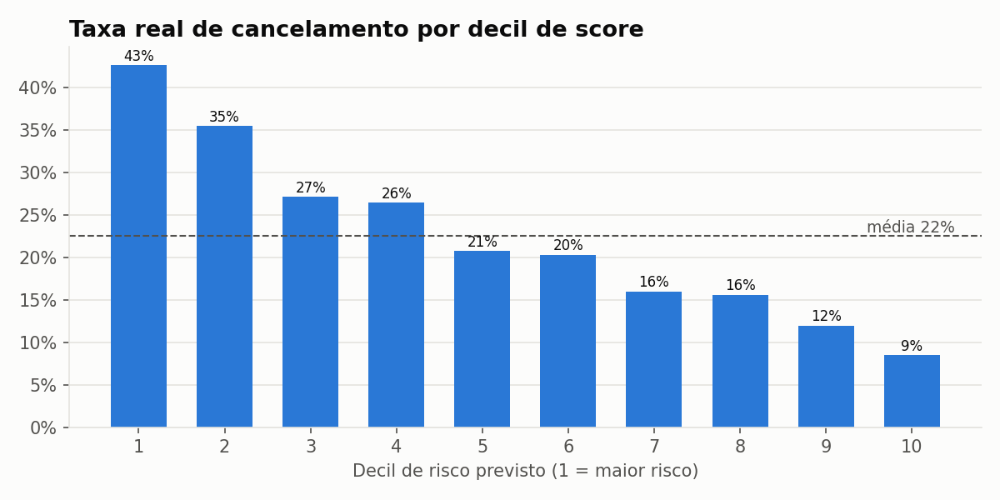

Relatório Executivo — Carteira de Seguros
Ano de referência 2025 · gerado automaticamente em 25/10/2026 16:48 · dados sintéticos
21.706
Apólices ativas
16.025
Clientes ativos
R$ 11.806.038
Prêmio ganho no ano
58,0%
Sinistralidade
R$ 60,73
Ticket médio mensal
1,35
Produtos por cliente
Principais achados
- Pet tem a maior sinistralidade (72%), contra 24% em Viagem: revisar precificação/aceitação de Pet.
- Pagamento via Pix cancela 30% em 12 meses, contra 19% no débito em conta: incentivar débito automático na contratação.
- O maior gargalo do funil é oferta → simulação (55% de passagem).
- 71% dos clientes ativos têm um único produto: base relevante para cross-sell.
- Em média, 77% das apólices seguem ativas 12 meses após a contratação.
Evolução da carteira

Sinistralidade

| produto | categoria | premio_ganho | sinistro_incorrido | sinistralidade | avisos | frequencia_anual | severidade_media | taxa_negativa |
|---|---|---|---|---|---|---|---|---|
| Pet | Pessoas | R$ 1.451.936 | R$ 1.051.311 | 72,4% | 1417 | 0.6019 | R$ 849 | 12,6% |
| Auto | Auto | R$ 5.450.132 | R$ 3.782.417 | 69,4% | 258 | 0.1297 | R$ 16.590 | 11,6% |
| Celular | Patrimonial | R$ 1.373.623 | R$ 797.311 | 58,0% | 528 | 0.1433 | R$ 1.689 | 10,6% |
| Vida | Pessoas | R$ 2.263.996 | R$ 868.016 | 38,3% | 46 | 0.0117 | R$ 21.700 | 13,0% |
| Residencial | Patrimonial | R$ 999.867 | R$ 288.656 | 28,9% | 132 | 0.0409 | R$ 2.488 | 12,1% |
| Viagem | Pessoas | R$ 266.482 | R$ 64.546 | 24,2% | 51 | 0.0474 | R$ 1.373 | 7,8% |
Jornada digital

| produto | ofertas_visualizadas | simulacoes | propostas | contratacoes | conv_oferta_simulacao | conv_simulacao_proposta | conv_proposta_contratacao | conversao_total |
|---|---|---|---|---|---|---|---|---|
| Viagem | 4423 | 2756 | 1810 | 1022 | 62,3% | 65,7% | 56,5% | 23,1% |
| Auto | 6563 | 3426 | 2190 | 1508 | 52,2% | 63,9% | 68,9% | 23,0% |
| Pet | 7719 | 3922 | 2445 | 1685 | 50,8% | 62,3% | 68,9% | 21,8% |
| Residencial | 10095 | 5228 | 3240 | 2197 | 51,8% | 62,0% | 67,8% | 21,8% |
| Vida | 12118 | 6124 | 3860 | 2603 | 50,5% | 63,0% | 67,4% | 21,5% |
| Celular | 14112 | 8573 | 5510 | 3024 | 60,8% | 64,3% | 54,9% | 21,4% |
Retenção e cancelamento


Modelo de risco de cancelamento
Regressão logística com AUC de 0.664 na base de teste. Os 10% de apólices com maior score concentram 19% dos cancelamentos (lift de 1.9x), permitindo ação de retenção focada.

Qualidade de dados
11 de 15 regras encontraram problemas na base bruta (772 linhas). Linhas com falha bloqueante foram para quarentena; as demais foram corrigidas no ETL.
| regra | dimensao | severidade | linhas_com_falha | pct_falha | status |
|---|---|---|---|---|---|
| clientes_id_duplicado | unicidade | alerta | 100 | 0,5% | FALHA |
| clientes_uf_nula | completude | alerta | 199 | 1,0% | FALHA |
| clientes_uf_invalida | validade | alerta | 200 | 1,0% | FALHA |
| clientes_nascimento_futuro | validade | alerta | 40 | 0,2% | FALHA |
| apolices_id_duplicado | unicidade | alerta | 87 | 0,3% | FALHA |
| apolices_premio_nao_positivo | validade | bloqueante | 57 | 0,2% | FALHA |
| apolices_cancelamento_antes_inicio | consistência | bloqueante | 35 | 0,1% | FALHA |
| apolices_status_inconsistente | consistência | bloqueante | 0 | 0,0% | OK |
| apolices_cliente_orfao | integridade | bloqueante | 28 | 0,1% | FALHA |
| sinistros_apolice_orfa | integridade | bloqueante | 4 | 0,1% | FALHA |
| sinistros_antes_vigencia | consistência | bloqueante | 12 | 0,3% | FALHA |
| sinistros_pago_maior_que_avisado | consistência | bloqueante | 10 | 0,2% | FALHA |
| sinistros_pago_sem_aprovacao | consistência | bloqueante | 0 | 0,0% | OK |
| jornada_evento_futuro | validade | bloqueante | 0 | 0,0% | OK |
| jornada_produto_invalido | integridade | bloqueante | 0 | 0,0% | OK |